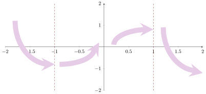

- for .
- for and .
- for and .
- for .
Sketch a possible graph of .
Start by marking where the derivative changes sign and
indicate intervals where is increasing and intervals is decreasing. The function has a
negative derivative from to . This means that is increasingdecreasing
on this interval. The function has a positive derivative from to . This means that is
increasingdecreasing
on this interval. Finally, The function has a negative derivative from to . This
means that is increasingdecreasing
on this interval.  Now we should sketch the concavity: concave upconcave down
when the second derivative is positive, concave upconcave down
when the second derivative is negative.
Now we should sketch the concavity: concave upconcave down
when the second derivative is positive, concave upconcave down
when the second derivative is negative. 

Finally, we can sketch our curve: